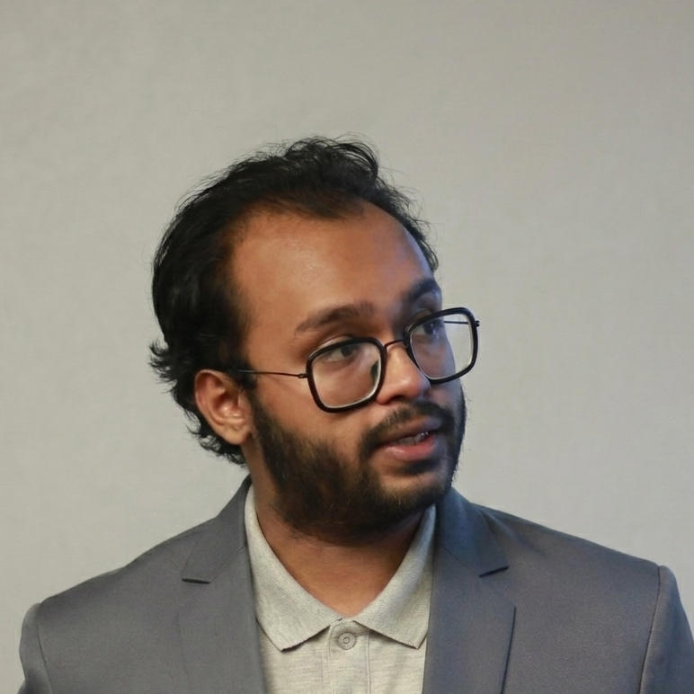

Senior RTL and verification engineer with 4+ years of hands-on experience across high-speed ASIC design, cache controllers, complex bus fabric, and SoC integration. Foez works end-to-end — from initial micro-architecture definition through lint-clean, CDC-safe synthesis handoff — embedding directly into client teams with zero ramp-up overhead.
Spanning the complete ASIC/FPGA front-end flow — from computer architecture and SoC integration through synthesis handoff — with deep specialization in UVM-based functional verification, protocol design, and CDC/RDC-safe signoff.
Every engagement is built on directness, transparency, and a relentless focus on first-time-right quality.
Born in Bangladesh's dynamic metropolis of Sylhet, where modern innovation coexists with historic heritage. I have always been interested in the invisible forces that influence our world. For me, subjects like computer architecture, digital technology, and electronics were more than simply academic subjects — they were the things that stoked my imagination and piqued my interest.
I obtained a Bachelor of Science in Electrical and Electronic Engineering from Shahjalal University of Science and Technology. University evolved into a hive of ideas where theory became practice. I jumped right into difficult tasks, constantly curious to see what else might be accomplished and to come up with original answers to difficult problems.
I started a new chapter in my life in 2022 when I began my career as an RTL Design & Verification Engineer. Being hired for the first time was an exciting and humbling experience. I thoroughly studied the subtleties of AMBA system interconnect protocols, which provided me with the assurance I needed to successfully navigate challenging technical situations.
My motivation has always been to take on challenges. I assumed leadership of a group tasked with developing and confirming a System-on-Chip (SoC) based on RV64G. Being the team leader meant more than just meeting goals — it meant fostering a culture of cooperation where creativity could flourish. Together, we not only accomplished our goals but also raised the bar for productivity and innovation throughout the organisation.
I really think that teaching is the best way to learn outside of the workplace. Not only does sharing my knowledge help others, but it also strengthens my own comprehension. My personal values are centred on mentoring and education, and I get great satisfaction from seeing the development of people I assist.
My aspirations are both ambitious and intimate: to consistently advance both professionally and spiritually. Real success involves more than just moving up the professional ladder — it also involves personal growth and fulfilment. This all-encompassing strategy encourages me to pursue knowledge constantly, welcome novel experiences, and exercise empathy.
Helping others in need is something I truly appreciate at my core. This altruistic way of thinking has improved my life and made my relationships with the community stronger. My goal is to leave a legacy of kindness, wisdom, and inspiration, characterised by the positive influence I've had on others.
In my opinion, the relationships we make and the lives we impact along the road define our journeys more so than the things we accomplish. I welcome you to join me — together, we can set off on a path of creativity, development, and collective achievement.
A selection of significant engineering projects spanning SoC architecture, protocol verification IP, and custom cache system design.
Client: A Fabless Semiconductor company from California
Client: A Fabless Semiconductor company from California
Client: A Fabless Semiconductor company from California
Currently accepting new engagements. Describe your silicon challenge and expect a concrete response within 24 hours.
Get in Touch